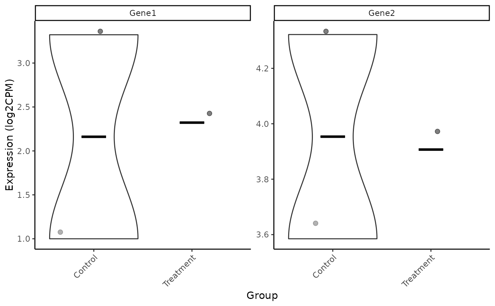

Generate Violin Plots for Individual Genes
Source:R/IndividualGenes_Violins.R
IndividualGenes_Violins.RdThis function creates violin plots of gene expression data with jittered points and optional faceting. It allows visualization of individual gene expression distributions across sample groups.
Usage
IndividualGenes_Violins(
data,
metadata = NULL,
genes,
GroupingVariable,
plot = TRUE,
ncol = NULL,
nrow = NULL,
divide = NULL,
invert_divide = FALSE,
ColorValues = NULL,
pointSize = 2,
ColorVariable = NULL,
title = NULL,
widthTitle = 16,
y_limits = NULL,
legend_nrow = NULL,
xlab = NULL,
colorlab = NULL
)Arguments
- data
A data frame containing gene expression values with row names as gene names and column names as sample IDs. (Required)
- metadata
An optional data frame containing sample metadata. The first column must match the sample IDs from
data. (Optional)- genes
A character vector of gene names to be plotted. (Required)
- GroupingVariable
A character string specifying the column in
metadataused for grouping samples on the x-axis. (Required)- plot
A logical value indicating whether to print the plot. If
FALSE, only the output list is returned. Default isTRUE. (Optional)- ncol
An optional numeric value specifying the number of columns in the facet grid. If not provided, it is computed automatically. Only applicable if
divideisNULL. (Optional)- nrow
An optional numeric value specifying the number of rows in the facet grid. If not provided, it is computed automatically. Only applicable if
divideisNULL. (Optional)- divide
An optional character string specifying a column in
metadatato be used for facetting, besides faceting by genes. (Optional)- invert_divide
A logical value indicating whether to invert the facet layout, when
divideis being used. Default isFALSE, corresponding to genes in the rows. (Optional)- ColorValues
An optional named vector mapping unique values of
ColorVariableto specific colors. IfNULL, a default Brewer palette ("Paired") is used. (Optional)- pointSize
A numeric value specifying the size of the points in the plot. Default is
2. (Optional)- ColorVariable
A character string specifying a metadata column used for coloring points. Default is
NULL. (Optional)- title
A character string specifying the title of the plot. Default is
NULL. (Optional)- widthTitle
A numeric value specifying the maximum width of the title before inserting line breaks. (Optional)
- y_limits
A numeric vector of length 2 specifying the limits of the y-axis. If
NULL(default), the y-axis is adjusted automatically. (Optional)- legend_nrow
A numeric value specifying the number of rows in the legend. Default is
NULL. (Optional)- xlab
A character string specifying the x-axis label. If
NULL, it defaults toGroupingVariable. (Optional)- colorlab
A character string specifying the legend title for colors. Default is an empty string. (Optional)
Value
A list containing:
- plot
A ggplot2 object representing the facetted violin plots.
- data
A data frame used for plotting, including transformed expression values (log2) and metadata.
Details
The function processes the gene expression data, filters for the specified genes, and transforms expression values using log2().
A violin plot with jittered points is generated using ggplot2. A median summary is added as a crossbar. If divide is provided,
facets are created using ggh4x::facet_grid2().
Color customization is available via ColorVariable and ColorValues.
Examples
# Example dataset
data <- data.frame(
A = c(10, 20, 30),
B = c(5, 15, 25),
C = c(2, 12, 22)
)
rownames(data) <- c("Gene1", "Gene2", "Gene3")
metadata <- data.frame(
sample = c("A", "B", "C"),
Group = c("Control", "Treatment", "Control")
)
genes <- c("Gene1", "Gene2")
IndividualGenes_Violins(data, metadata, genes, "Group")
#> Using gene as id variables
#> Warning: Groups with fewer than two datapoints have been dropped.
#> ℹ Set `drop = FALSE` to consider such groups for position adjustment purposes.
#> Warning: Groups with fewer than two datapoints have been dropped.
#> ℹ Set `drop = FALSE` to consider such groups for position adjustment purposes.
